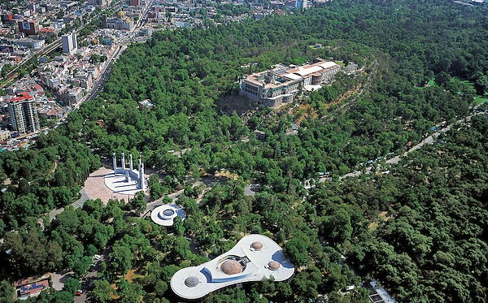

Libros
Fahrenheit 451
Autor: Ray Bradbury
Editorial: Ballantine Books
Fecha de publicación: 1953
"Fahrenheit 451" es una distopía que presenta un mundo donde los libros están prohibidos y son quemados por bomberos. Montag, un bombero encargado de quemar libros, comienza a cuestionar su papel en la sociedad después de conocer a Clarisse, una joven que lo desafía a pensar por sí mismo. A medida que Montag profundiza en la lectura de los libros que está destinado a destruir, se enfrenta a la represión del gobierno y la ignorancia de su esposa. Con la ayuda de un grupo de disidentes, Montag se convierte en un fugitivo, decidido a preservar la literatura y la libertad de pensamiento.
Reseña: "Fahrenheit 451" de Ray Bradbury es una poderosa advertencia sobre los peligros de la censura y la conformidad. Con una prosa poética y visionaria, Bradbury crea un mundo opresivo donde la pasión y la creatividad están prohibidas. A través del viaje de Montag, el lector reflexiona sobre el poder transformador de la literatura y la importancia de desafiar las normas establecidas. Esta obra maestra sigue siendo relevante en la era digital, recordándonos el valor de la libertad de expresión y la necesidad de protegerla en todas sus formas.

Las batallas en el desierto
Autor: José Emilio Pacheco
Editorial: Era
Fecha de publicación: 1981
"Las batallas en el desierto" es una novela breve que narra la historia de Carlos, un niño de clase media en la Ciudad de México durante la década de 1940. La trama se centra en su enamoramiento hacia Mariana, la madre de su amigo. La narrativa se teje entre la inocencia de la infancia y las complejidades de la vida adulta, explorando temas como la amistad, el deseo, la nostalgia y las tensiones sociales y políticas de la época. A través de la voz nostálgica del narrador, se revela el contraste entre la inocencia perdida y la dura realidad de un país en transformación.
Reseña: "Las batallas en el desierto" de José Emilio Pacheco es una conmovedora reflexión sobre la memoria, el amor y los cambios sociales en el México de los años 40. Con una prosa evocadora, Pacheco captura la atmósfera de una época marcada por la nostalgia y la incertidumbre. La historia, narrada desde la perspectiva de un adulto que recuerda su infancia, examina las complejas relaciones humanas y las tensiones políticas de manera sutil pero impactante. Una obra maestra de la literatura mexicana que sigue resonando con el público por su poderosa representación de la experiencia humana.
Cine y Streaming
Kung Fu Panda: La Trilogía
Con el próximo estreno de la película "Kung Fu Panda 4", la saga desarrollada por DreamWorks vuelve a estar en el centro de atención. Ha sido una de las más exitosas y aclamadas por la crítica y el público gracias a su mezcla de comedia, acción y corazón, capturando la atención de audiencias de todas las edades.
La saga de "Kung Fu Panda" sigue la historia de Po, un torpe y amante de la comida panda que sueña con convertirse en un maestro de kung fu. En la primera película, Po es elegido como el legendario Guerrero Dragón para proteger el Valle de la Paz de la malvada amenaza de Tai Lung. En la secuela, Po se enfrenta a Lord Shen, un peligroso pavo real con planes de conquistar China, mientras descubre la verdad sobre su pasado. En la tercera entrega, Po se encuentra con su padre biológico y descubre un paraíso secreto de pandas, pero su tranquilidad se ve amenazada por la llegada del villano Kai. A lo largo de la saga, Po aprende lecciones sobre valentía, amistad y autodescubrimiento, demostrando que incluso el más improbable de los héroes puede alcanzar la grandeza.
Malcolm el de en medio
"Malcolm el de en medio" se destacó como una serie adelantada a su época por su representación realista de la clase trabajadora y su humor irreverente. Abordó temas de la vida cotidiana y la disfunción familiar de manera auténtica, desafiando las convenciones de las sitcoms tradicionales. La serie exploró temas tabú como el estrés laboral y la sexualidad adolescente con sinceridad y sin rodeos. Sus personajes complejos y multidimensionales permitieron una mayor identificación del público. En resumen, "Malcolm el de en medio" fue una serie innovadora que se atrevió a mostrar la realidad de la vida familiar de una manera franca y sin adornos, estableciéndose como un clásico de la televisión.
Destinos
El Parque de Chapultepec
El Parque de Chapultepec, ubicado en la Ciudad de México, es uno de los parques urbanos más grandes del mundo, con una extensión de más de 686 hectáreas. Se encuentra en el corazón de la ciudad y es fácilmente accesible en transporte público, como metro y autobús, así como en automóvil.
El Parque de Chapultepec es un oasis verde en medio de la bulliciosa ciudad. Sus extensos jardines, lagos y bosques ofrecen un escape tranquilo de la vida urbana, perfecto para pasear, hacer picnic o simplemente relajarse al aire libre.
Dentro del parque, encontrarás una variedad de atracciones para todos los gustos. El Castillo de Chapultepec, un majestuoso palacio que una vez fue residencia de emperadores y presidentes, ofrece vistas panorámicas de la ciudad y alberga el Museo Nacional de Historia. También puedes visitar el Zoológico de Chapultepec, uno de los más antiguos de América Latina, que alberga una gran variedad de especies animales.
Alameda Central
La Alameda Central es uno de los parques públicos más antiguos de América Latina, con una historia que se remonta al siglo XVI. Fue diseñada como un espacio de recreación y esparcimiento para los habitantes de la ciudad, y a lo largo de los siglos ha sido testigo de eventos históricos y sociales importantes.
El parque cuenta con un diseño paisajístico único, con senderos arbolados, fuentes ornamentales y esculturas que decoran sus jardines. Entre los puntos destacados se encuentra el Hemiciclo a Juárez, un monumento dedicado al expresidente Benito Juárez, que es uno de los íconos más reconocibles de la Alameda.